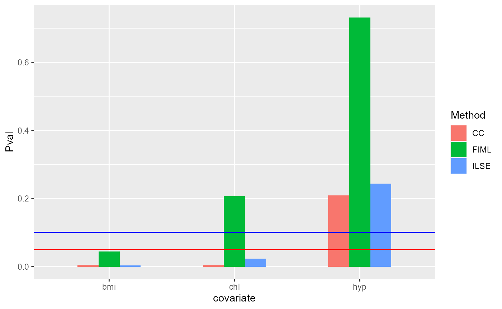

vignettes/ILSE.Realdata.Rmd
ILSE.Realdata.RmdFirst, we load the ‘ILSE’ package and the real data which can be loaded by following command.
library("ILSE")
#> ILSE : Linear regression when covariates include missing values by embedding the
#> correlation information between covariates. Especially for block missing data,
#> it works well. 'ILSE' conducts imputation and regression simultaneously and iteratively.
#> More details can be referred to
#> Huazhen Lin, Wei Liu and Wei Lan. (2021) <doi:10.1080/07350015.2019.1635486>.
#>
#> Attaching package: 'ILSE'
#> The following objects are masked from 'package:base':
#>
#> print, summary
data("nhanes")We fit the linear regression model using ‘ILSE’ function, and then compare with CC method and FIML method.
ncomp <- sum(complete.cases(nhanes))
message("Number of complete cases is ", ncomp, '\n')
#> Number of complete cases is 13
ilse2 <- ilse(age~., data=nhanes, verbose=T)
#> iter=2, d_fn=1.000000, d_par = 0.362223
#> iter=3, d_fn=0.001542, d_par = 0.001063
#> iter=4, d_fn=0.000009, d_par = 0.000021
#> iter=5, d_fn=0.000000, d_par = 0.000000
print(ilse2)
#> $beta
#> (Intercept) bmi hyp chl
#> 2.06942664 -0.11656313 0.62109971 0.01056364
#>
#> $d.fn
#> [1] 6.654795e-08
#>
#> $d.par
#> [1] 1.096466e-07
#>
#> $iterations
#> [1] 5Next, Bootstrap is applied to evaluate the standard error and p-values of each coefficients estimated by ILSE. We observe four significant coefficients.
set.seed(1)
s2 <- summary(ilse2, Nbt=20)
#> ===================Start bootstrapping================
#> ===================Finish bootstrapping================
s2
#> Estimate std. Error Z value Pr(>|Z|)
#> (Intercept) 2.06942664 1.271889901 1.627049 0.103726783
#> bmi -0.11656313 0.040544745 -2.874926 0.004041226
#> hyp 0.62109971 0.490373409 1.266585 0.205303638
#> chl 0.01056364 0.004746863 2.225395 0.026054745First, we conduct CC analysis.
lm1 <- lm(age~., data=nhanes)
s_cc <- summary.lm(lm1)
s_cc
#>
#> Call:
#> lm(formula = age ~ ., data = nhanes)
#>
#> Residuals:
#> Min 1Q Median 3Q Max
#> -0.58588 -0.17788 0.02349 0.08438 0.74451
#>
#> Coefficients:
#> Estimate Std. Error t value Pr(>|t|)
#> (Intercept) 1.773958 0.761854 2.328 0.04486 *
#> bmi -0.104013 0.028198 -3.689 0.00501 **
#> hyp 0.410821 0.303436 1.354 0.20879
#> chl 0.011300 0.002925 3.864 0.00383 **
#> ---
#> Signif. codes: 0 '***' 0.001 '**' 0.01 '*' 0.05 '.' 0.1 ' ' 1
#>
#> Residual standard error: 0.4155 on 9 degrees of freedom
#> (12 observations deleted due to missingness)
#> Multiple R-squared: 0.7704, Adjusted R-squared: 0.6939
#> F-statistic: 10.07 on 3 and 9 DF, p-value: 0.003103We fit linear regression model using FIML method.
fimllm <- fimlreg(age~., data=nhanes)
print(fimllm)
#> $beta
#> intercept bmi hyp chl
#> 2.37216291 -0.13518966 0.46886921 0.01253721
#>
#> $formula
#> age ~ .We also use bootstrap to evaluate the standard error and p-values of each coefficients estimated by ILSE. We observe only one significant coefficients.
s_fiml <- summary(fimllm, Nbt=20)
#> ===================Start bootstrapping================
#> ===================Finish bootstrapping================
s_fiml
#> Estimate std. Error Z value Pr(>|Z|)
#> intercept 2.37216291 4.29449831 0.5523725 0.5806931
#> bmi -0.13518966 0.50231359 -0.2691340 0.7878266
#> hyp 0.46886921 2.47949527 0.1890987 0.8500155
#> chl 0.01253721 0.06725012 0.1864265 0.8521103We visualize the p-vaules of each methods, where red line denotes 0.05 in y-axis and blue line 0.1 in y-axis.
library(ggplot2)
library(ggthemes)
#> Warning: package 'ggthemes' was built under R version 4.0.4
pMat <- cbind(CC=s_cc$coefficients[,4], ILSE=s2[,4], FIML=s_fiml[,4])
df1 <- data.frame(Pval= as.vector(pMat[-1,]),
Method =factor(rep(c('CC', "ILSE", "FIML"),each=3)),
covariate= factor(rep(row.names(pMat[-1,]), times=3)))
ggplot(data=df1, aes(x=covariate, y=Pval, fill=Method)) + geom_bar(position = "dodge", stat="identity",width = 0.5) + geom_hline(yintercept = 0.05, color='red') + geom_hline(yintercept = 0.1, color='blue') +
scale_fill_economist()
sessionInfo()
#> R version 4.0.3 (2020-10-10)
#> Platform: x86_64-w64-mingw32/x64 (64-bit)
#> Running under: Windows 10 x64 (build 22000)
#>
#> Matrix products: default
#>
#> locale:
#> [1] LC_COLLATE=Chinese (Simplified)_China.936
#> [2] LC_CTYPE=Chinese (Simplified)_China.936
#> [3] LC_MONETARY=Chinese (Simplified)_China.936
#> [4] LC_NUMERIC=C
#> [5] LC_TIME=Chinese (Simplified)_China.936
#>
#> attached base packages:
#> [1] stats graphics grDevices utils datasets methods base
#>
#> other attached packages:
#> [1] ggthemes_4.2.4 ggplot2_3.3.5 ILSE_1.1.6
#>
#> loaded via a namespace (and not attached):
#> [1] tidyselect_1.1.1 xfun_0.29 bslib_0.3.1 purrr_0.3.4
#> [5] pbapply_1.5-0 colorspace_2.0-2 vctrs_0.3.8 generics_0.1.1
#> [9] htmltools_0.5.2 yaml_2.2.2 utf8_1.2.2 rlang_0.4.11
#> [13] pkgdown_1.6.1 jquerylib_0.1.4 pillar_1.6.5 glue_1.4.2
#> [17] withr_2.4.3 DBI_1.1.2 lifecycle_1.0.1 stringr_1.4.0
#> [21] munsell_0.5.0 gtable_0.3.0 ragg_1.1.3 memoise_2.0.0
#> [25] evaluate_0.14 labeling_0.4.2 knitr_1.37 fastmap_1.1.0
#> [29] parallel_4.0.3 fansi_0.5.0 highr_0.9 Rcpp_1.0.7
#> [33] scales_1.1.1 cachem_1.0.6 desc_1.3.0 jsonlite_1.7.2
#> [37] farver_2.1.0 systemfonts_1.0.3 fs_1.5.2 textshaping_0.3.5
#> [41] digest_0.6.28 stringi_1.7.5 dplyr_1.0.7 grid_4.0.3
#> [45] rprojroot_2.0.2 tools_4.0.3 magrittr_2.0.1 sass_0.4.0
#> [49] tibble_3.1.5 crayon_1.4.2 pkgconfig_2.0.3 ellipsis_0.3.2
#> [53] assertthat_0.2.1 rmarkdown_2.11 R6_2.5.1 compiler_4.0.3